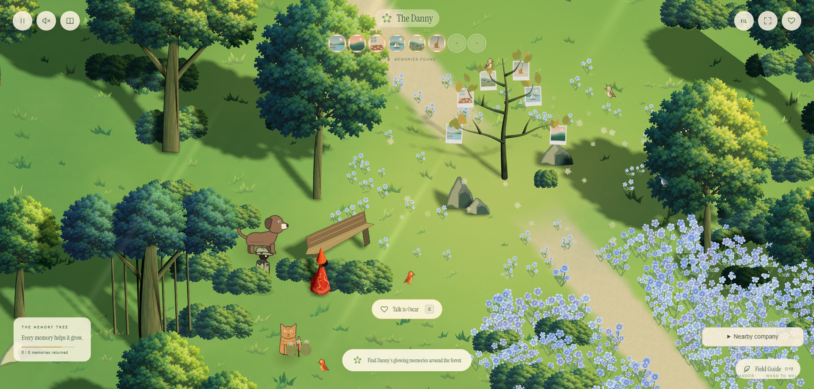
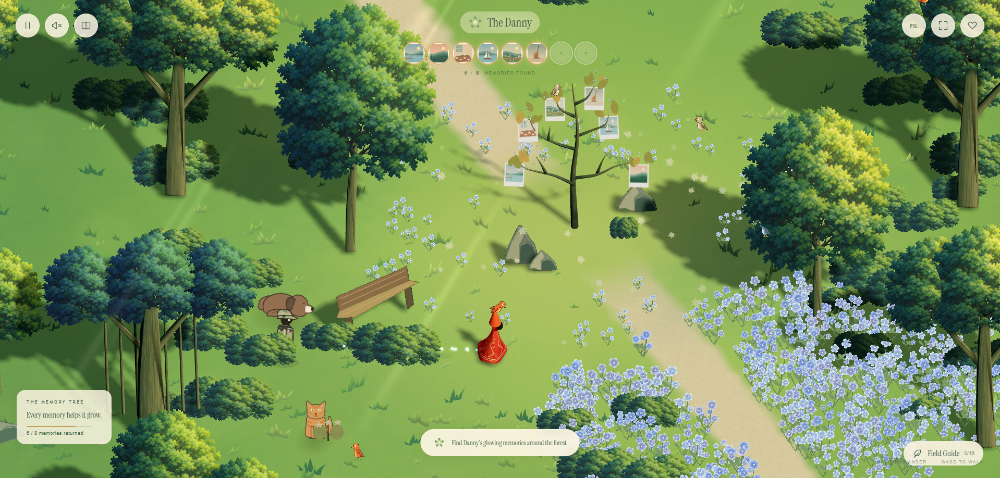
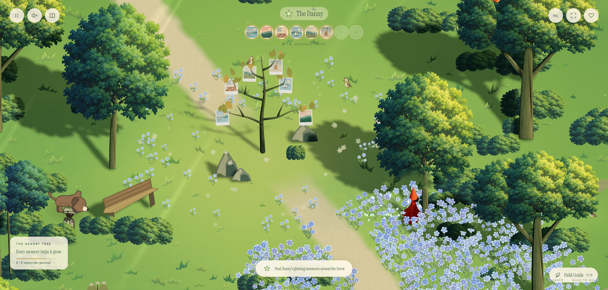
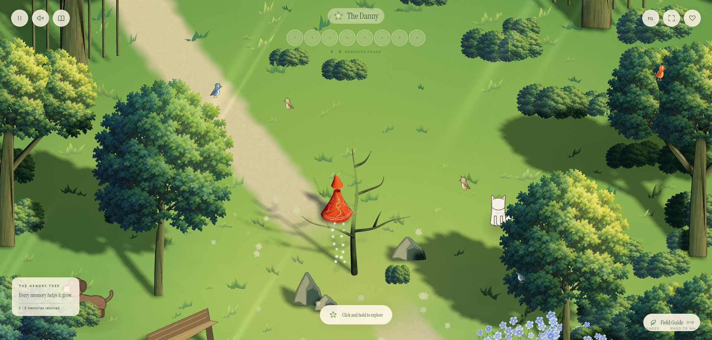
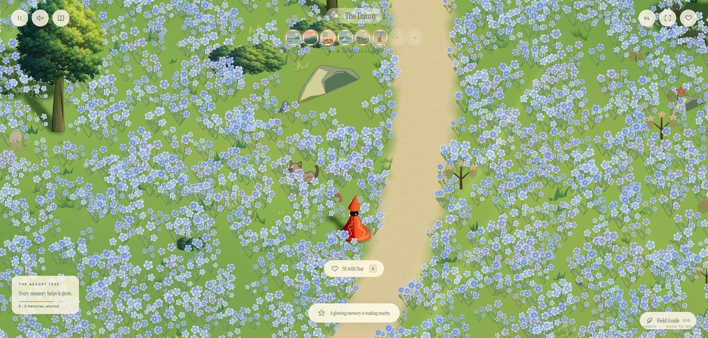
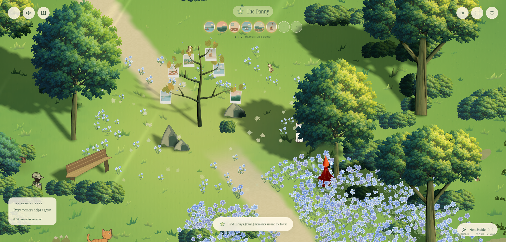
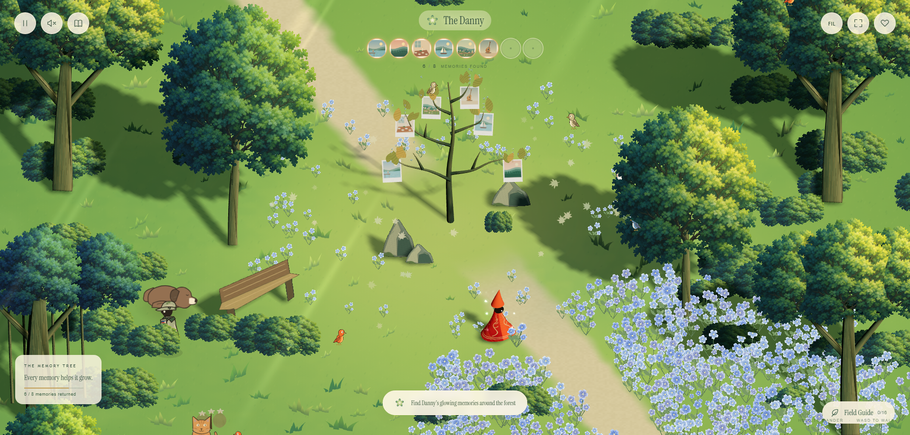
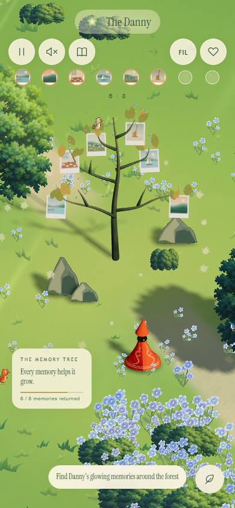

A forest that responds
Latest correction: trees and bushes stay opaque when the traveler is behind them.
Trees stay anchored while you walk. Approaching a bird starts a painted wingbeat and flight; a trunk impact gives the tree a small, fading shake. Footsteps leave glowing motes along the path as well as in the meadow. After inactivity, the traveler takes short, gentle strolls and rests nearby; keyboard or pointer activity returns control immediately.
Previous devUpdated dev

A ground bird before the traveler approaches.
It lifts away with four drawn wing poses.
Branch birds also react to approaching the trunk.
The walking glow continues outside the flower patches.
Blue flowers, layered crowns and cool forest shade.
Trunks remain solid. The brief shake settles back to the same rooted pose.
Automatic strolling begins after 18 seconds without input and respects solid trunks.
Phone framing.